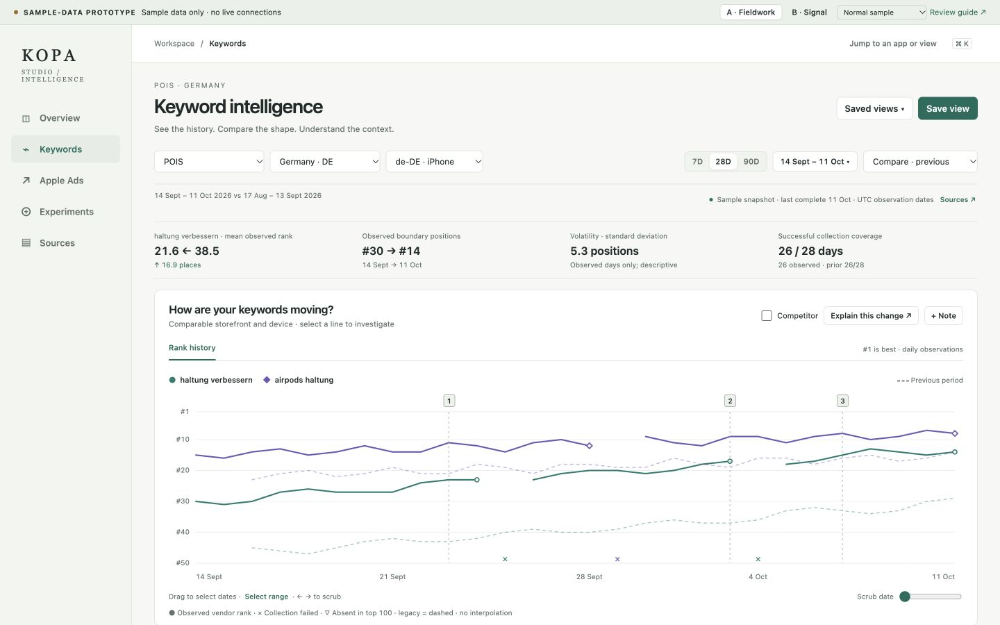
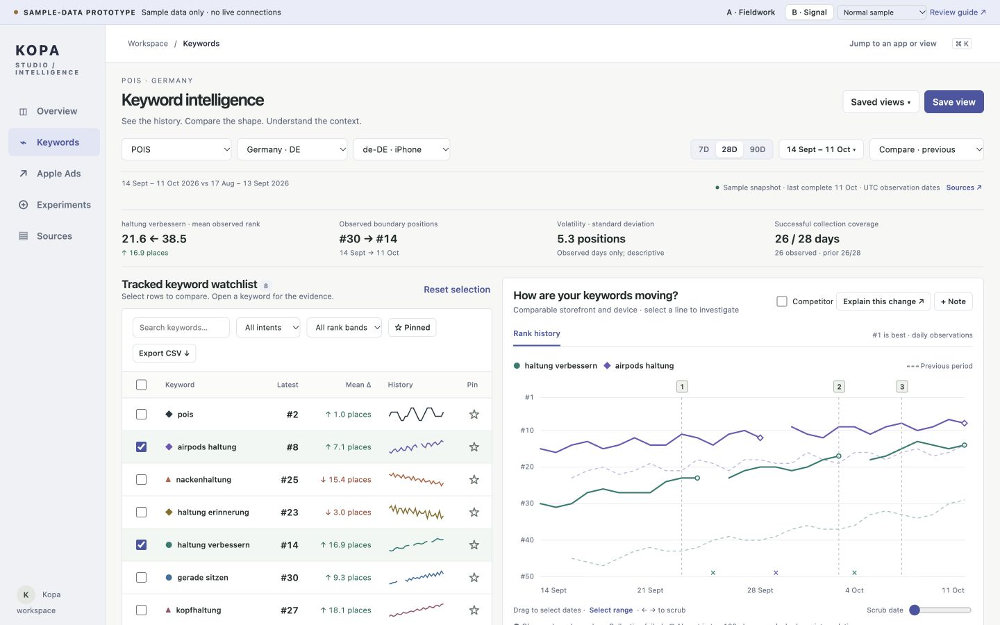

Kopa Studio / UX direction review / October 2026
A clearer way to follow the evidence.
Two working design directions. Three primary screens each. Every performance number is synthetic; no live connections, production writes or deployment. Review the interactions as well as the visual hierarchy.
Recommendation: A · Fieldwork. Its wide chart gives comparisons, gaps and events room to breathe. Owner design approval is pending.
Direction A / recommended
Fieldwork
A calm, warm-neutral analytical workspace. Large histories lead; compact metrics frame the question. The watchlist and evidence drawer stay tightly connected to the chart.

Best fit: several keyword histories and period comparisons on a laptop. Tradeoff: scroll to scan the complete watchlist.
Direction B / alternate
Signal
A denser cool-neutral workstation. The watchlist sits beside the chart on wider displays for repeated row-by-row inspection. The same analytical state and source rules apply.

Best fit: rapid scanning on a large monitor. Tradeoff: less chart width; stacks on narrower screens.
Five-minute interaction review
Follow a movement from history to a decision.
- Open Keywords. Select a third keyword in the table, then toggle one off in the legend.
- Scrub a date with the slider or arrow keys. Read current and previous observation dates, method and missing states.
- Use Select range to analyze the last week. Inspect the new comparator and coverage, then clear the range.
- Open a keyword and a dated chart event. Try Explain this change and the prefilled experiment-note form.
- Open Apple Ads. Drill into a campaign, ad group, targeting keywords and reported terms. Switch attribution, then review delay and ambiguity.